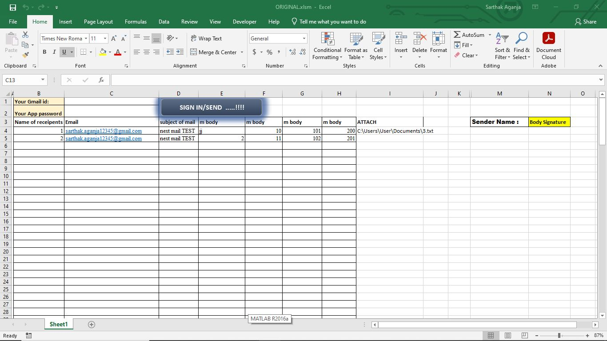
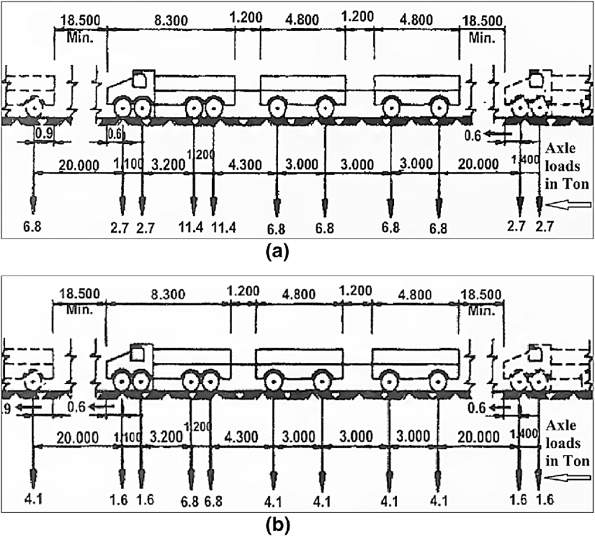

My Projects
Civil Estimate Calculator
This tool calculates the required quantities of cement, sand, and aggregate based on user-defined dimensions and concrete strength (M15, M20, M25). It helps contractors save approximately 10-15% in costs.
Working Mechanism:
- Concrete Calculator: Inputs dimensions and concrete strength to estimate materials needed.
- Brick Work Calculator: Estimates the quantity of bricks, cement, and sand for wall construction.
- Plaster Work Calculator: Calculates materials for plastering based on wall area and thickness preference.
Standards:
- M15: Simple foundations, kerbs.
- M20: Domestic floors, small buildings.
- M25: Heavy-duty floors, multi-story structures.
Brick Work Calculator
This calculator estimates the quantity of bricks, cement, and sand needed for brickwork based on wall dimensions, using Nepal standard brick sizes.
Plaster Work Calculator
This tool determines the amount of cement and sand required for plastering based on wall area and thickness preference (various options available).
Email Bot Prototype for Construction Management
Working Mechanism:
- Gmail Account Sign-In: The bot signs in through your Gmail account. You need to write your Gmail ID and app-specific password in the respective cells in the Excel document.
- Enlisting Target Customers: Please list the names of target customers, their emails, and the mail bodies accordingly. The advantage of using Excel as the base is that we can pull up a cell to easily copy-paste the same message.
- Customized Emails: Users can provide separate paragraphs and customized emails to each recipient. After clicking one button, the bot reads data from each row in the table and deals with one row at a time, implementing the mail format:
Row 1 Dear [row1-customer], Paragraph 1 (row1 - variable) Paragraph 2 (row1 - variable) Paragraph 3 (row1 - variable) Paragraph 4 (row1 - variable) Body SignatureThe bot continues to the next row until all enlisted parameters are finished.
Bending Moment and Shear Force Calculation
This project involves custom functions built for determining the values of Bending Moment (absolute) and Shear Forces for moving loads to deduce design/factored Bending Moment and Shear Force.
Loadings are based on the following criteria:
- 70RT: This loading criterion specifies the maximum allowable load for the structure.
- Class AA: A classification for heavy loads typically used in design codes.
- Boogie Loading: Refers to a specific loading pattern associated with multi-axle vehicles.
Function FINDBM(s As Double, u As Double, b As Double) As Double calculates the Bending Moment based on loading positions of moving loads. By checking with nested If-Else conditions, it determines whether loads are moving with precision (0.1m) compared to the position where Bending Moment and Shear Force are to be calculated for a given span length (l).
Function findsf(s As Double, u As Double, b As Double) As Double calculates the Shear Force under similar conditions.
Sample logic snippet for Bending Moment:
Function FINDBM(s As Double, u As Double, b As Double) As Double
If u < 0 Or u > s Then
FINDBM = 0
ElseIf u >= 0 And u < b Then
FINDBM = u / s * (s - b)
ElseIf u > b And u <= s Then
FINDBM = (s - u) / s * b
End If
End Function
Exam Mark Calculation Automation
This project allows professors to format exam tables according to their specific needs, including preferences for two-part exams, number of students, and the number of questions in each part.
Once these inputs are provided, the “SOLVE NOW” button formats the table to assign marks based on the input values. Grades are assigned to respective students according to their marks in each subject. Professors can specify full (custom marks) and passing marks, which will be assigned as grade 1. Other grades (1.3, 1.7, 2, 2.3, 2.7, 3, 3.7) are assigned according to a nested If logic with the concept of linear interpolation.
Additionally, in the statistics sheet, the count of each grade point is calculated using the Application.Function.CountIf parameter built into Excel. These activities are executed with one button, showcasing the beauty of our VBA automation.
Once all calculations are finished, users can export tables as PDF with the following code:
Sub ToPDF()
Dim ws4 As Worksheet
Dim pdfFilePath As String
On Error Resume Next
Set ws4 = ThisWorkbook.Sheets("Statistics")
On Error GoTo 0
pdfFilePath = "C:\Users\User\Documents\Statistics Data.pdf"
ws4.ExportAsFixedFormat Type:=xlTypePDF, Filename:=pdfFilePath, Quality:=xlQualityStandard
End Sub
Two-Degree-of-Freedom Beam Analyzer

I have worked in a two-degree-of-freedom (DOF) beam analyzer using the stiffness matrix method, based on Euler-Bernoulli beam theory. This tool allows users to input custom support and loading conditions, which can include various configurations such as point loads, distributed loads, and support locations.
The analyzer calculates the displacements, rotations, and internal forces in the beam, providing a comprehensive analysis that can aid in the design and verification of structural components. Users can visually interpret results through graphs and tables generated by the tool, ensuring clarity and ease of understanding.
Key Features:
- Customizable loading conditions to simulate real-world scenarios.
- Graphical output of beam deflections and internal forces.
- Supports multiple boundary conditions for versatile analysis.
- Based on established Euler-Bernoulli beam theory for accurate results.
Materials Science and Structural Health Monitoring
This project includes an exploration of image processing techniques, specifically binarizing images and extracting pixel data (1,0), and their predictions with minimized RMSE. This documentation presents a detailed approach integrating machine learning and mathematical science for meticulous output prediction.
I collected 2000 images of concrete with cracks and 2000 images without cracks, all resized to 100 square pixels (3 channels). These images were converted to a 1D array, resulting in a characteristic feature input matrix of 100 dimensions.
Before utilizing the Softmax function, I performed data cleaning using outlier detection (Quartiles technique) and correlation analysis (Xi, y) with an absolute correlation threshold of 0.3. Further modifications were made to the input vectors based on the threshold values obtained from correlation.
This model employs the Softmax function for binary output prediction, allowing for an overview of concepts such as the Gradient Descent Algorithm and Loss/Cost function. These were iteratively applied using the Iterative Reweighted Unconstrained Subspace technique to minimize variation across iterations.
The final prediction of output is based on the maximum probability of each class. True Positive Rate (TPR) and False Positive Rate (FPR) were evaluated to determine the model's effectiveness. The optimal threshold was established using Youden’s Index (TPR – FPR) to balance TPR and FPR, achieving an Area Under Curve (AUC) close to 1.